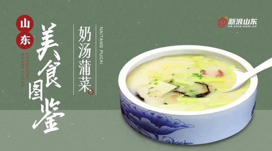

奶汤蒲菜：济南汤菜之冠 藏着多少温柔
发布时间: 2022-04-07 4859 次浏览
-
大明湖里有三宝，茭白蒲菜白莲藕；明湖踩藕成一景，奶汤蒲菜美名传。
长期以来，人们对鲁菜的印象就是黑乎乎、油乎乎、咸乎乎的重口味，其实不然，对于济南人而言，没有什么比一道香浓奶白的蒲菜汤更让人心驰神往，这道在外地人看来平平无奇的菜汤，却是一道当地宴席上不可或缺的经典名菜，被誉为“济南第一菜汤”。
奶汤蒲菜是经典鲁菜之一，用奶汤和蒲菜烹制而成，汤呈乳白色，蒲菜脆嫩鲜香，入口清淡味美，是上乘汤菜，温暖着每一个食客的胃。
济南，是一个被泉水滋养的城市，泉水流到哪里，哪里就盎然起来，洗濯得济南灵光四射。济南大明湖集济南群泉水汇集而成，《济南快览》说：“大明湖之蒲菜，其形似茭白，其味似笋，遍植湖中，为北方数省植物菜类之珍品。”
蒲菜，在全国一共三个地方食用，一个是江苏淮安，一个是云南曲靖，另外一个就是济南。蒲菜本身没有什么独特的味道，只是有些清香，吃起来口感比较脆，有些像葱白，嚼一口咯吱咯吱的；如果蒲菜不够嫩，任你拽掉门牙也奈何它不得。
老舍先生也曾在《大明湖之春》中写道：“游过苏州的往往只记得此地的点心，逛过西湖的人提起来便念叨那里的龙井茶、藕粉与莼菜什么的，吃到肚子里的也许比一过眼的美景更容易记住，那么大明湖的蒲菜、茭白、白花藕，还真许是它驰名天下的重要原因呢？不论怎么说吧，这些东西既都是水产，多少总带着些南国风味。”即使没有尝过奶汤蒲菜，也能从文学大家的描绘中“尝”出它的美味。
蒲菜浑身是宝，不仅能吃还能用：嫩茎可吃，蒲叶外的老茎片可以用来编制蒲包、蒲垫子，蒲棒晒干后，点燃可用来驱蚊虫。割取蒲菜后，还有一段粗茎及块根，俗称“老牛筋”、“面疙瘩”。把它们洗净后生吃，口感清甜。 大明湖的蒲菜，是济南的美蔬，颜色虽白，但并非雪白，而是柔和的象牙白；咬起来，它脆，近乎酥，有纤维却鲜嫩无比，嚼起来爽而无骨；它味淡，初尝无味，再回味，又有那么一股若有若无的蒲香，仿佛隐含着清凉的湖水气
济南菜精于制汤，清浊分明，堪称一绝。制作清汤，讲究微火吊制，次数越多，汤味越醇、汤色越清。且先下红哨、后下白哨、使之吸附汤中的杂质，并入其鲜味于汤中，以达汤清味鲜的佳境。奶汤则非旺火猛煮不可，使原料中的胶质蛋白质及脂肪颗粒溶于汤中，以便使汤汁色白味醇。其中“清汤干贝鸡鸭腰”、“蝴蝶海参”、“奶汤全家福”、“奶汤核桃肉”、“奶汤蒲菜”、“奶汤鲫鱼”是济南汤菜中的名品。
黄河文化旅游宣传平台
联系电话: 17753010787
版权所有：山东大学技术团队
技术支持：山东大学技术团队